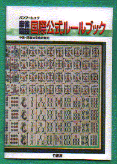
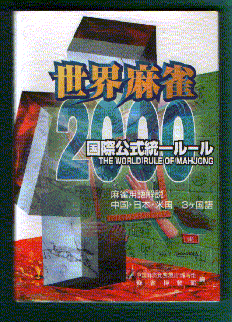

Book review 書壇。
（30）中国公式ルール
最近、なにかと中国ルールが話題になっている。その中で一番話題になっているのが、北京オリンピックと同時に、チェスや囲碁、麻雀の大会が開催されるかも、という話。
まぁ、どうなるか分からないが、いずれにしても麻雀大会が開催されるとしたら、中国ルール。そこで参加を考えるなら、まず中国麻将を覚えなければならない。そこで参考になるのが次の本。
この５月に竹書房から出たばかりの本で、値段も\350−と廉価だ。ぺらんとした薄い本であるが、一通りのことは載っている。
もう一冊、参考書として、同じく竹書房から出版されている次の本。こっちは新書版で価格も千円と、ちと高い。その代わり、アガリ役の英訳名なども詳しく記載されている。もっとも英訳名などいくら覚えても、中国麻将がうまくなるわけではない。そこで中国麻将のことだけを考えるなら\350−のほうで充分だ。両方とも竹書房のHPから注文することが出来る。
ま、それはそれでいいとして、正直言って「国際公式ルール」という名称が、ちと気に入らない。（^-^；
現時点では、どうひいきめにみても、「中国公式ルール」のレベル。百歩譲って将来への期待込みの名称だとしても、アガリ役や得点システムなど抜本的な改善がなされない限り、国際的な標準ルールに成長するというのはかなり困難なような気がする。
中国公式ルールは、日本麻雀と同じでツモアガリは３人払い、ロンアガリは放銃者払いである。しかし千点の手をロンアガリした場合は千点でも、ツモアガリした場合は３人から千点づつ受け取る様な計算。そこで同じ手でもツモアガリはロンアガリの３倍弱の得点となる。
※計算の基本システムが異なるので、中国麻将で千点、２千点という点数は発生しない。あくまで概念の説明である。
これはかなりギャンブル的なルールである。本来の中国麻雀は現在の日本麻雀と同様、（ツモ符や門前ツモ点の加算によって）ツモアガリのほうがそれなりに大きくはなることはあっても、３倍弱もの差がつくようなことはなかった。
また本来の中国麻雀は、たとえば３千点の手をロンアガリしても、３人払いであった（各自千点づつ支払う）。すくなくとも、その方式の方が、現行の得点システムよりはるかに競技麻雀的である。ふんとに、いったいいつ頃から、こういうギャンブル的な得点システムになったのか？。
アガリ役にしても同様で、「てんでんばらばら」など、競技麻雀的には首を傾げるような役が数多く採用している。こういう変則的なアガリ役を大幅に整理することも必要だろう。
なにせ８０もの役があるので、日本麻雀のように、「ロン、8000点です」、「ツモ、2000点オールです」というわけにはなかなかゆかない。ヘタすると、かなりのベテランでも、自分がどれだけの点数でアガったのか瞬時には的確な点数が出てこない。
現行日本麻雀の点数計算でも複雑すぎて初心者にはなかなか習得しにくい。それでもいったん習得してしまえば、アガリ点は瞬時に算出できる。 いきなり開けられた相手の手だって、一目見れば見当はつく。その肝心要な得点計算が、ああだこうだとチェックしなければ算出できないようなシステムでは、国際ルールとしてはいまいちのような気がする。
また中国公式ルールには、８点縛りがある。これは日本麻雀に換算すると、ほぼ二翻しばり強に相当する。日本麻雀でもそうであるが、手が廻っているときはいいが廻っていないときに二翻縛りになると、かなりヒイヒイ云わされる。８点縛りも同様で、手が回らないとなると、非常に苦しい。
ほんらい中国麻雀のよさはアガリに対して制約＝縛りが無いところ。それを常時り８点縛り≒二翻縛りとしたため、せっかくの中国麻雀のよさがを消えてしまっている。
「いや、それをクリヤーしてゆくのが技量だ」と云いたいのかも知れないが、技量のポイントはそんなところにはない。もし技量のポイントがそこにあるというのであれば、10点縛り、12点縛り、はたまた16点縛りになぜしないのか。「いくら何でも、それは難しすぎる」と云われたら、「技量のポイントはそこにあるのでは」と返事しておこう。
などといろいろ云ったが、別に「中国麻将はつまらない」とか、「中国麻将は、こうあるべきだ」という話をしているのではない。世の中には二十二麻雀からリーチドラ麻雀、ブー麻雀からガリサンマまで、さまざまな麻雀がある。そしてもちろん中国麻将は中国麻将。それらはすべて麻雀文化の一つの形態である。
中国麻将は「親子の点数区別がない」、「連荘がない」、「王牌を残さない」など、競技麻雀的なすばらしい要素もたぶんに持っている。しかしお題目だけでなくホントに国際公式ルールを目指すのであれば、改善の余地が多分にあると思うよ、と云うことが云いたいだけなのだ。